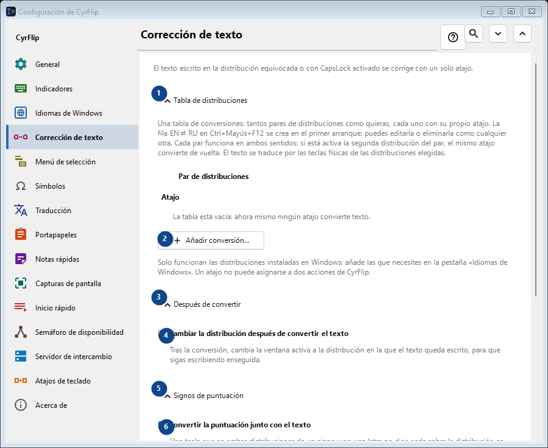
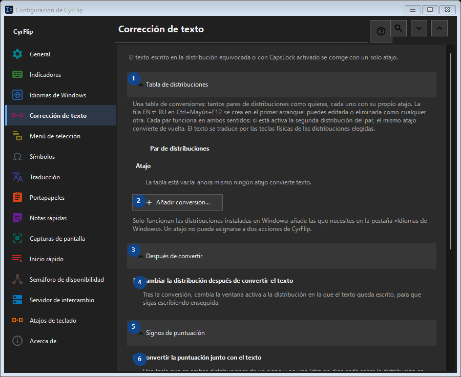

Corrección de texto
Para qué sirve
El texto escrito en la distribución equivocada o con CapsLock activado se corrige con un solo atajo.


Orden de uso
Los ajustes se aplican de inmediato. No hay un orden obligatorio; usa los grupos siguientes.
Elementos
1. Tabla de distribuciones
Usa este comando para la acción indicada. Lee cualquier confirmación antes de aceptarla.
Tus atajos2. Añadir conversión...
Usa este comando para la acción indicada. Lee cualquier confirmación antes de aceptarla.
Tus atajos3. Después de convertir
Usa este comando para la acción indicada. Lee cualquier confirmación antes de aceptarla.
Tus atajos4. Cambiar la distribución después de convertir el texto
Tras la conversión, cambia la ventana activa a la distribución en la que el texto queda escrito, para que sigas escribiendo enseguida.
Tus atajos5. Signos de puntuación
Usa este comando para la acción indicada. Lee cualquier confirmación antes de aceptarla.
Tus atajos6. Convertir la puntuación junto con el texto
Una tecla que en ambas distribuciones da un signo y no una letra no dice nada sobre la distribución en la que se pulsó: detrás de «/» la tecla rusa tiene un punto, y la «/» del teclado numérico es la misma en todas partes y en el texto copiado no se distingue de la normal. Mientras esté marcada, esos signos se convierten junto con el texto: así se ha comportado CyrFlip siempre. Desmárcala si los escribes a propósito con más frecuencia: «/ghbdtn» conservará entonces su barra en vez de empezar por un punto. Los signos en cuya tecla la otra distribución tiene una letra (la coma, los corchetes) se convierten en cualquier caso.
Tus atajos7. Mayúsculas y minúsculas
Usa este comando para la acción indicada. Lee cualquier confirmación antes de aceptarla.
Tus atajos8. Corregir CapsLock
Intercambia mayúsculas y minúsculas en la selección; útil tras activar CapsLock sin querer.
Tus atajos9. Cambiar - Corregir CapsLock
Usa este comando para la acción indicada. Lee cualquier confirmación antes de aceptarla.
Tus atajos10. Sincronizar CapsLock tras corregir las mayúsculas
Cambia el estado físico de CapsLock tras la corrección, para que las siguientes pulsaciones coincidan con el texto corregido.
Tus atajos